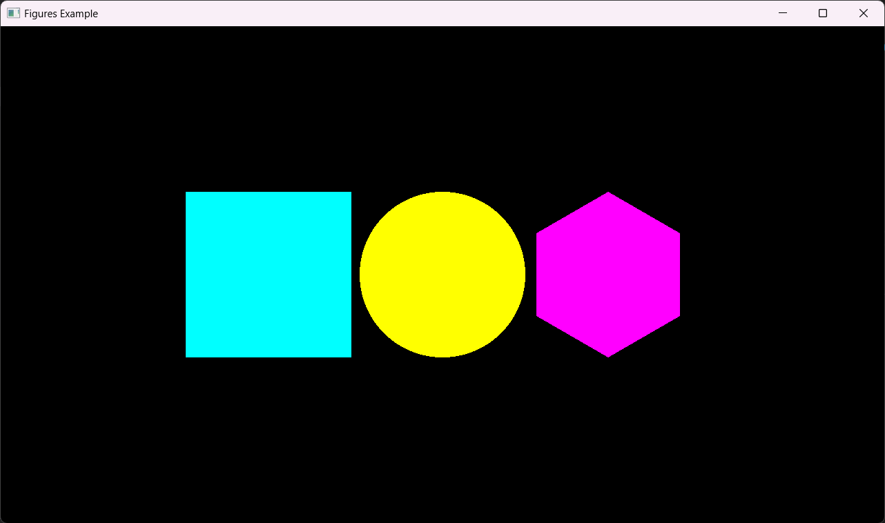

Introduction
Nogine is a 2D Game Development framework made in pure Rust.
One of the main design principles in Nogine is minimizing the number of dependencies that need to be compiled in order for it to work.
(This book assumes you have basic proeficiency with the Rust programming language. If you don't, check out the Rust Book)
(This book also assumes you have some experience with game development)
Warning
Nogine quite literally has just come out of the oven, so bugs, performance issues and poor design is to be expected. It is not recommended to build any serious long term project with it.
Creating a Window
Creating a window in Nogine revolves around a WindowCfg object. This object defines the initial configuration of your window, following the builder pattern.
WindowCfg allows to set these initial parameters:
- Resolution through the
.res()method. - Title thorugh the
.title()method. - Window mode through the
.mode()method.
First, we'll create a WindowCfg object.
use nogine::window::{WindowMode, WindowCfg};
fn main() {
let window_cfg = WindowCfg::default()
.res((1280, 720))
.title("Hello Window!")
.mode(WindowMode::Fullscreen);
}Once we have our WindowCfg, we can initialize the window by calling the .init() method. This method will return an instance of the Window type with the provided configuration.
To prevent the application from closing, we'll add a loop {} after creating the window.
use nogine::window::{WindowMode, WindowCfg};
fn main() {
let window_cfg = WindowCfg::default()
.res((1280, 720))
.title("Hello Window!")
.mode(WindowMode::Fullscreen);
let window = window_cfg.init().expect("Couldn't open the window.");
loop {};
}If you execute the code now, you'll find that the window will not behave properly. This is normal as we are not currently handling any window event, but we'll address it in the next chapter.
Creating the Main Loop
The main loop of an application is, as its name implies, the loop that handles the logic that must be constantly executed.
Luckily for us, Nogine automatically handles most of the main loop handling, so the required setup is minimal. A basic main loop in Nogine works like so:
use nogine::window::{WindowMode, WindowCfg};
fn main() {
let window_cfg = WindowCfg::default()
.res((1280, 720))
.title("Hello Window!")
.mode(WindowMode::Fullscreen);
let mut window = window_cfg.init().expect("Couldn't open the window.");
while window.is_running() {
window.pre_tick(None);
window.post_tick();
}
}In case you are wondering why the first parameter of the .pre_tick() method is None, this will be answered in the Custom Render Pipeline chapter, but there's no need to worry about that currently.
Forcing Framerate
Something related to the main loop is forcing a framerate. This is actually desirable in many cases to reduce the strain on CPU and GPU resources.
The Window type comes with a .set_target_framerate() exactly for this.
To lock the framerate at 60 fps we would do something like this:
use nogine::window::{WindowMode, WindowCfg};
fn main() {
// --snip--
window.set_target_framerate(Some(60.0));
while window.is_running() {
window.pre_tick(None);
// Game logic here
window.post_tick();
}
}Obtaining the Timestep
Forcing the framerate only guarantees it not exceding the target framerate, but on lower end devices or poorly optimized games the framerate may be much less than the target.
For this very reason, it is desirable to have a time_step variable. Luckily, the Window type already handles that for us and allows us to retrieve the time step through the .ts() method.
use std::time::Instant;
use nogine::window::{WindowMode, WindowCfg};
fn main() {
// --snip--
window.set_target_framerate(Some(60.0));
while window.is_running() {
window.pre_tick(None);
let ts = window.ts();
// Game logic here
window.post_tick();
}
}Graphics Setup
To start displaying graphics, some setup is necessary to ensure the rendered data will display properly.
We will setup the following parameters before continuing:
Pixels per Unit
Pixels per unit (PPU) defines the number of pixels that fit inside a "spatial unit". PPU can be set at any time, and the associated functions are the following:
Graphics::set_pixels_per_unit // Sets the current pixels per unit
Graphics::get_pixels_per_unit // Returns the current pixels per unitCamera Data
The camera data defines which objects will be viewed by the camera, and therefore, be rendered. Camera data can be set with the following function:
Graphics::set_cam(pos, half_size) // Schedules a camera change
Graphics::get_cam_data // Returns the current camera dataIn most cases, half_size should follow the window's aspect ratio. The aspect ratio can be obtained with the .get_aspect_ratio() method.
Because the aspect ratio may change if the player changes the window size, you should set the camera data every frame.
Clear Color
The clear color is the color of the screen background. The functions associated with clear color are the following:
Graphics::set_clear_col // Sets the clear color
Graphics::get_clear_col // Returns the clear colorYou only need to run the set function once, so you can do it before the main loop.
About the Rendering System
The rendering system in Nogine works like a state machine, so always keeping a mental note on the state is key to avoid undesired behavior.
The rendering part is composed of a Batch Rendering System that stores the state of the rendering system when a render request is performed. These are all the elements that compose the state of the rendering system:
- Camera Data: This value will be consistent across the whole frame, all changed done the the camera data will only come into effect after the frame has ended.
- Custom Materials: These values will change in an intuitive way. Any geometry rendered between setting and resetting the custom material will be rendered with said material.
- Geometry Type: These values will change automatically when scheduling the rendering of different kinds of items. Keep in mind that only the same type of geometry can be batched, we will go more in depth in the Performance Considerations chapter.
- Blending Modes: Different blending modes can be set and reset at will.
Drawing functions only apply to the current frame, so to consistently draw a piece of geometry the drawing function must be called each frame.
Function names
All graphics related functions are static methods of the Graphics type. Most drawing functions have a simplified version, and an extended version suffixed with an _ext or a _full in its name.
Primitive Rendering
Rendering primitives in Nogine is as simple as calling the associated draw function.
These are the available primitives and their draw functions:
- Rects:
::draw_rect()and::draw_rect_full(). - Circles:
::draw_circle()and::draw_ellipse(). - Polygons:
::draw_polygon()and::draw_polygon_ext().
Now, with the following configuration you should get something like the following image:
Graphics::set_cam(Vector2::ZERO, Vector2(1.5 * window.aspect_ratio(), 1.5));
Graphics::draw_rect(Vector2(-1.55, -0.5), Vector2::ONE, Color4::CYAN);
Graphics::draw_circle(Vector2::ZERO, 0.5, Color4::YELLOW);
Graphics::draw_polygon(Vector2(1.0, 0.0), 0.5, 0.0, 6, Color::PINK);
Texture Rendering
Loading a Texture
Before rendering a texture, it's necessary to load it from disk or from memory. To do this, we'll use the ::load() method from the Texture type. This method accepts a reader and a configuration and returns a Result<Texture, _>.
For example, we could do something like this:
let file = File::open("texture.png").unwrap();
let buf_reader = BufReader::new(file);
let texture = Texture::load(&buf_reader, Default::default()).unwrap();Texture Configs
To customize how our texture will be sampled, we'll need to specify the configuration when loading the texture through the TextureCfg type. This type allows us to configure the following fields:
- Filtering: Defines the interpolation used to sample the pixels from the texture. (Closest/Nearest, linear...)
- Wrapping: Defines how the sampler will behave when trying to load outside the 0 to 1 uv range (outside the bounds of the texture).
Rendering the Texture
To render textures we can use the functions ::draw_texture() and ::draw_texture_full(). The size of the texture will depend on the pixels per unit and will keep its aspect ratio, unless it's explicitly scaled.
For example, this is the code we would use to render the texture we previously loaded into the screen:
let file = File::open("texture.png").unwrap();
let buf_reader = BufReader::new(file);
let texture = Texture::load(&buf_reader, Default::default()).unwrap();
Graphics::draw_texture(Vector2::ZERO, Vector2::ONE, 0.0, &texture);Sprites and Sprite Atlases
There are 3 key concepts regarding Sprites:
- Sprites: A slice of a texture.
- Sprite Atlases: A texture containing multiple sprites.
- Sprite Rects: The rect that defines a Sprite inside a Sprite Atlas.
Defining a Sprite Atlas
Sprite Atlases in Nogine are defined by two things, an internal texture and a cell size.
Sprite Atlases are organized in a grid of cells. A cell is the minimum size a Sprite from that atlas can have, and all Sprites are made up of an integer number of cells.
This means you can have, for example, 16x16 Sprites and 32x32 Sprites in the same sprite atlas by having a cell size of 16.
Sprite Atlases are created as such:
use nogine::graphics::texture::SpriteAtlas;
let atlas = SpriteAtlas::new(texture, (16, 16));Getting Sprites
To get a sprite from the atlas, you'll need a Sprite Rect.
Sprite Rects are defined by a position and a size, both in cells. (Positions go from top to bottom and left to right).
Sprites can be extracted from an atlas as such:
use nogine::graphics::texture::SprRect;
let spr_a = atlas.get(SprRect(0, 0, 1, 1)); // A 1x1 sprite
let spr_b = atlas.get(SprRect(1, 0, 2, 2)); // A 2x2 spriteSome Considerations
Sprites contain a reference to their Sprite Atlas, and as such they require a lifetime. If you need to store Sprites, it is simpler to store the Sprite Rect and the Sprite Atlas instead of the sprite itself.